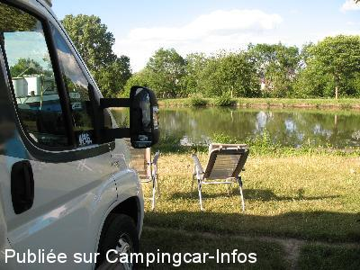
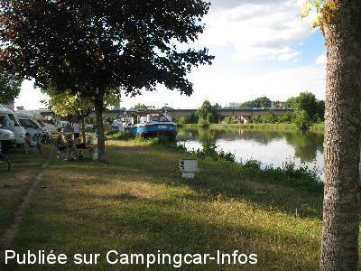
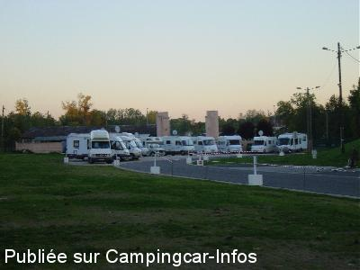
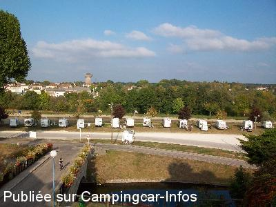
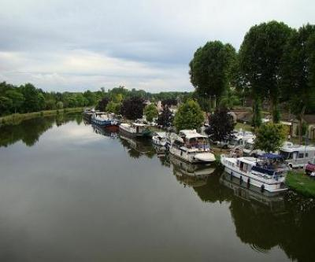
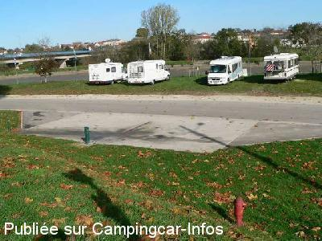

ASN = Aire de services avec stationnement nuit possible de :
CHARMES
(N° 392)
Accès/adresse :
Port de Plaisance
88130 CHARMES
88130 CHARMES
Latitude : (Nord) 48.37292° Décimaux ou 48° 22′ 22′′
Longitude : (Est) 6.29595° Décimaux ou 6° 17′ 45′′
Tarif : 2015
Stationnement, eau, électricité 6 A : 7 €
Douche 10 mn : 1,50 €
Paiement carte bancaire
Type de borne : Plateforme
Services :


Accès handicapés
Autres informations :
Ouvert toute l'année
78 emplacements
Eau disponible en hiver
Tél Office de Tourisme : +33(0)329 660 186
tourisme@mairie-charmes.fr
http://www.tourisme-charmes.fr

Le 09/08/2014 par André B.

Le 09/08/2014 par André B.

Le 16/07/2014 par Varadéro

Le 16/07/2014 par Varadéro

Le 26/08/2012 par PASCAL

Le 05/11/2006 par Jipé / aire de vidange
de
Van dee
le 11/01/2016 :
Bonjour,
De passage en 2005, 2006, 2007, nous y retournions toujours avec plaisir, de passage ce 05/01/2016, j'ai été surpris de trouver une borne avec barrière et système de payement électronique, dommage les personnes qui passaient à l'époque étais super sympa, pour ma part j'ai quand même payé en arrivant à 8h00 le matin pour y faire le plein d'eau, mauvaise surprise il y avais des barrières et l'eau y étais fermé, j'ai vraiment été déçu et j'ai trouvé que tout le "charmes" étais partis, je ne reviendrais plus, dommage car les commerce et resto y étais sympa ...
Bonjour,
De passage en 2005, 2006, 2007, nous y retournions toujours avec plaisir, de passage ce 05/01/2016, j'ai été surpris de trouver une borne avec barrière et système de payement électronique, dommage les personnes qui passaient à l'époque étais super sympa, pour ma part j'ai quand même payé en arrivant à 8h00 le matin pour y faire le plein d'eau, mauvaise surprise il y avais des barrières et l'eau y étais fermé, j'ai vraiment été déçu et j'ai trouvé que tout le "charmes" étais partis, je ne reviendrais plus, dommage car les commerce et resto y étais sympa ...
de
pascal
le 12/11/2015 :
De passage fin octobre, des barrières étaient mises le long du halage. Compte tenu des éloges faites, nous nous sommes arrêter pour voir. Désolé, mais pour notre part, nous avons été déçus...Aire qui nous est apparue sans âme, si je la compare à celle de Pont à Mousson. On est certainement difficile. Peut être qu'il faudra que l'on essai en été.
De passage fin octobre, des barrières étaient mises le long du halage. Compte tenu des éloges faites, nous nous sommes arrêter pour voir. Désolé, mais pour notre part, nous avons été déçus...Aire qui nous est apparue sans âme, si je la compare à celle de Pont à Mousson. On est certainement difficile. Peut être qu'il faudra que l'on essai en été.
de
Pichu
le 23/10/2015 :
Bonjour
J'y suis passé l'an dernier et devrais y repasser le mois prochain. Mes souvenirs sont excellents. Bravo aussi à la municipalité qui se sent donc bien concerné par ce qui s'y passe.
Merci à la commune
Bonjour
J'y suis passé l'an dernier et devrais y repasser le mois prochain. Mes souvenirs sont excellents. Bravo aussi à la municipalité qui se sent donc bien concerné par ce qui s'y passe.
Merci à la commune
de
HB. régisseur
le 08/07/2015 :
Pour vous répondre, Christian, nous avons mis des sac à crottes depuis maintenant 10 ans sur l'aire de Camping cars (zone de vidange), mais une partie seulement des maîtres vont les utiliser. Nous allons renforcer prochainement notre règlement intérieur afin que tout le monde se sente chez lui.
Pour infos : le lieu des tirs pour le 13 juillet change cette année, ce n'est plus au port mais à l'Espace CLEMENCEAU.
RDV le samedi 15 Août à 14h30 au lavoir pour le LOTO des 20 ans de l'aire de camping-cars.
Bonne route à tous,
L'équipe de l'Office de Tourisme de Charmes
Pour vous répondre, Christian, nous avons mis des sac à crottes depuis maintenant 10 ans sur l'aire de Camping cars (zone de vidange), mais une partie seulement des maîtres vont les utiliser. Nous allons renforcer prochainement notre règlement intérieur afin que tout le monde se sente chez lui.
Pour infos : le lieu des tirs pour le 13 juillet change cette année, ce n'est plus au port mais à l'Espace CLEMENCEAU.
RDV le samedi 15 Août à 14h30 au lavoir pour le LOTO des 20 ans de l'aire de camping-cars.
Bonne route à tous,
L'équipe de l'Office de Tourisme de Charmes
de
Di Mino christian
le 16/06/2015 :
Bonjour
N'étant pas trop loin de CHARMES et depuis le temps que je vois tous ces bons commentaires de cette aire et bien j'y suis allé ce weekend.Ok bien situé au bord du canal je suis pêcheur,pas cher 7€ eau et électricité comprise,1.50€ la douche dix minutes.Par contre les sanitaires trop petites pour le nombres de places.J'ai compté 60 camping cars ce weekend donc minimum 120 personnes .......et 40 chiens je vous laisse immaginer le bruit toute la journée ..et le reste.Je suis désolé mais pendant tous ces trois jour je n'ai pas vu une seule fois un u seul maitre de ces charmants toutous rammaser quoi que ce soit.Voila agglutinés les uns a côté des autres ...mais il en faut pour tous les gouts.
Christian
Bonjour
N'étant pas trop loin de CHARMES et depuis le temps que je vois tous ces bons commentaires de cette aire et bien j'y suis allé ce weekend.Ok bien situé au bord du canal je suis pêcheur,pas cher 7€ eau et électricité comprise,1.50€ la douche dix minutes.Par contre les sanitaires trop petites pour le nombres de places.J'ai compté 60 camping cars ce weekend donc minimum 120 personnes .......et 40 chiens je vous laisse immaginer le bruit toute la journée ..et le reste.Je suis désolé mais pendant tous ces trois jour je n'ai pas vu une seule fois un u seul maitre de ces charmants toutous rammaser quoi que ce soit.Voila agglutinés les uns a côté des autres ...mais il en faut pour tous les gouts.
Christian
de
jocelyne80
le 18/05/2015 :
Rien n'a ajouter aux commentaires précédents très bien;
Boulangerie à 100m
Rien n'a ajouter aux commentaires précédents très bien;
Boulangerie à 100m
de
henri58
le 13/05/2015 :
Bravo et encore Bravo pour cette aire de CC.
Tout est parfait, même le prix de 7euros,EDF compris est super.
Je suis resté 2X7 jours et je peux dire que tous les jours les personnels de la commune sont à l'oeuvre pour que tout soit parfait.
Seule chose qui m'inquiète, c'est le succés de l'aire et les campingcaristes qui passent et qui ne respectent pas toujours les consignes de propreté et d'hygiène.
BRAVO, à la commune , voilà un exemple que bien d'autres villes devraient s'inspirer.
Une médaille pour cette aire CC.
Bravo et encore Bravo pour cette aire de CC.
Tout est parfait, même le prix de 7euros,EDF compris est super.
Je suis resté 2X7 jours et je peux dire que tous les jours les personnels de la commune sont à l'oeuvre pour que tout soit parfait.
Seule chose qui m'inquiète, c'est le succés de l'aire et les campingcaristes qui passent et qui ne respectent pas toujours les consignes de propreté et d'hygiène.
BRAVO, à la commune , voilà un exemple que bien d'autres villes devraient s'inspirer.
Une médaille pour cette aire CC.
de
Lysistrata
le 16/11/2014 :
Bonjour,
Le 15/11/2014,j'y étais. A mon sens, aire parfaite, mais il ne faut pas se garer près du pont. A 5 heure du matin la ville commence à se réveiller, les voitures passent sur le pont.
On sent réellement une volonté des autorités municipales de vouloir faire tout ce qu'ils peuvent pour nous satisfaire.
Et la même constatation convient également aux riverains et commerçants.
Cette ville mérite son nom à cent pour cent "CHARMES"
Bonjour,
Le 15/11/2014,j'y étais. A mon sens, aire parfaite, mais il ne faut pas se garer près du pont. A 5 heure du matin la ville commence à se réveiller, les voitures passent sur le pont.
On sent réellement une volonté des autorités municipales de vouloir faire tout ce qu'ils peuvent pour nous satisfaire.
Et la même constatation convient également aux riverains et commerçants.
Cette ville mérite son nom à cent pour cent "CHARMES"
de
André B.
le 09/08/2014 :
# Aire propre, calme, judicieusement placée avec tous les services. Cadre agréable, reposant.
Paiement uniquement par carte. 7 €/nuit avec l'électricité
# Aire propre, calme, judicieusement placée avec tous les services. Cadre agréable, reposant.
Paiement uniquement par carte. 7 €/nuit avec l'électricité
de
HAUPERT
le 27/06/2014 :
Bonjour à tous,
L'office de tourisme du Pays de Charmes est en train de revoir le système wifi. Normalement, l'année prochaine ce n'est plus wifi stop mais orange en accès libre de 8h00 à 22h00. Nous sommes encore en pleine réflexion. Si vous avez des observations n'hésitez pas : tourisme@mairie-charmes.fr ou sur Facebook : ot charmes sur moselle.
POUR INFOS: Braderie de la levrette le dimanche 6 juillet de 9h à 18h avec le 300m brouette, la rue du terroir, le concours de tartes aux fraises et pleins d'autres surprises !
Bonne soirée,
L'équipe de l'Office de Tourisme
Bonjour à tous,
L'office de tourisme du Pays de Charmes est en train de revoir le système wifi. Normalement, l'année prochaine ce n'est plus wifi stop mais orange en accès libre de 8h00 à 22h00. Nous sommes encore en pleine réflexion. Si vous avez des observations n'hésitez pas : tourisme@mairie-charmes.fr ou sur Facebook : ot charmes sur moselle.
POUR INFOS: Braderie de la levrette le dimanche 6 juillet de 9h à 18h avec le 300m brouette, la rue du terroir, le concours de tartes aux fraises et pleins d'autres surprises !
Bonne soirée,
L'équipe de l'Office de Tourisme
de
Mady
le 18/04/2014 :
De Mady du 88
Bonjour à tous
Tout ce qui est dit en bien sur cette aire C.C de Charmes et parfaitement exacte.Nous avons séjourné du 11/04 au 13/04. Seul problème,(toujours le même),les jeunes par leur comportement bruyant la nuit.Vendredi soir, jusqu'à 1h20 du matin, samedi soir, ... je me suis endormi avec les boules quies(!)
Affaire à suivre, merci pour cet aire qui reste accueillant.
De Mady du 88
Bonjour à tous
Tout ce qui est dit en bien sur cette aire C.C de Charmes et parfaitement exacte.Nous avons séjourné du 11/04 au 13/04. Seul problème,(toujours le même),les jeunes par leur comportement bruyant la nuit.Vendredi soir, jusqu'à 1h20 du matin, samedi soir, ... je me suis endormi avec les boules quies(!)
Affaire à suivre, merci pour cet aire qui reste accueillant.
de
HB régisseur du Port
le 05/04/2014 :
La Ville de Charmes a remis en état et a fait de nouveaux améliorations, notamment sur l'espace du lavoir et des sanitaires. Rafraîchissement total avec une surveillance toujours présente.
N'hésitez pas à nous donner vos idées pour faire évoluer notre aire !
Merci à vous.
La Ville de Charmes a remis en état et a fait de nouveaux améliorations, notamment sur l'espace du lavoir et des sanitaires. Rafraîchissement total avec une surveillance toujours présente.
N'hésitez pas à nous donner vos idées pour faire évoluer notre aire !
Merci à vous.
de
brigitte et pascal de la somme
le 13/02/2014 :
De passage pour une nuit le 5 février ,malgré des températures clémentes ,l'eau était coupée ,nous avons pu vidanger les eaux noires sans pouvoir rincer la cassette . les locaux wc fermés en piteux états .
Pourtant cette aire doit etre agréable a la belle saison .Aprés une nuit de repos ,nous avons continué notre route .Merci a la municipalité de mettre tout en oeuvre pour que nos haltes soient agréables .
De passage pour une nuit le 5 février ,malgré des températures clémentes ,l'eau était coupée ,nous avons pu vidanger les eaux noires sans pouvoir rincer la cassette . les locaux wc fermés en piteux états .
Pourtant cette aire doit etre agréable a la belle saison .Aprés une nuit de repos ,nous avons continué notre route .Merci a la municipalité de mettre tout en oeuvre pour que nos haltes soient agréables .
de
HB. Régisseur
le 23/01/2014 :
Bonjours à tous,
l'aire de camping-cars a été automatisé cela va faire 6 mois. Nous sommes toujours en train d'améliorer votre confort, et cela n'empêche pas les bénévoles de passer. Le dérangement fait par les jeunes sont suivis de très prés par la police qui enquête. En pleine nuit, n'hésitez pas à appeler la gendarmerie et ne surtout pas sortir du véhicule.
Pour infos le 23 MAI, Fêtes des plaisanciers au lavoir (comme une fête des voisins mais pour les plaisanciers, camping caristes sur le port et les habitants).
A bientôt,
L'équipe de l'Office de Tourisme
Bonjours à tous,
l'aire de camping-cars a été automatisé cela va faire 6 mois. Nous sommes toujours en train d'améliorer votre confort, et cela n'empêche pas les bénévoles de passer. Le dérangement fait par les jeunes sont suivis de très prés par la police qui enquête. En pleine nuit, n'hésitez pas à appeler la gendarmerie et ne surtout pas sortir du véhicule.
Pour infos le 23 MAI, Fêtes des plaisanciers au lavoir (comme une fête des voisins mais pour les plaisanciers, camping caristes sur le port et les habitants).
A bientôt,
L'équipe de l'Office de Tourisme
de
camper67
le 23/09/2013 :
De passage ce week end (21/09/13) l'aire est bien à 6€ mais le stationnement n'est plus possible sur l'herbe entre octobre et mars, ceci pour ne pas l'endommager. En effet la semaine précédente les forains étaient installés sur l'aire et ont complètement dégradé la partie herbe.
De passage ce week end (21/09/13) l'aire est bien à 6€ mais le stationnement n'est plus possible sur l'herbe entre octobre et mars, ceci pour ne pas l'endommager. En effet la semaine précédente les forains étaient installés sur l'aire et ont complètement dégradé la partie herbe.